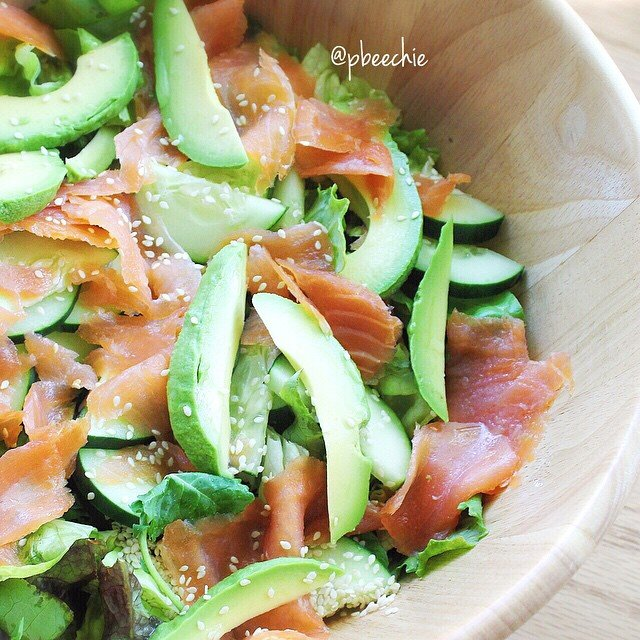

Smoked Salmon Salad

No boring salads allowed!!! Only the coolest of the cool salads are allowed into the flavor party. I made a smoked salmon salad to take hiking with Jesse this past weekend and it made me happy. We also took a bunch of fruit!! I posted a recipe video to Youtube this week! Check it out riiiight HERE.
With my fibromyalgia, I can't always manage a more high-intensity, "explosive" hour workout. What I can do, though, is a longer, low intensity workout. So Jesse and I have decided to start hiking more! It's a great way to have fun but stay active. We went last weekend, we're going again this weekend, and we'll probably start going during the week too. It's nice. :)
Smoked Salmon Salad
Serves: 1-2
-
1 bag salad greens
-
1/2 cucumber
-
1/2 avocado
-
1 package smoked salmon (4 oz)
-
1 TBSP sesame seeds
-
1 lime
-
2-3 TBSP olive oil
-
salt & pepper (Optional)
Get a giant bowl out. Fill it with your bag of salad greens; you don't need any set amount - base it off of hunger levels. I also like to get 2 different types of greens, and just use half a bag of each. This adds variety to the salad. Slice the cucumber and avocado and add it to the bowl. Also add the smoked salmon. Sprinkle the sesame seeds on top of the salad. As a dressing, we are using lime juice and olive oil. So squeeze as much lime juice as you can on the salad. For the olive oil, start with 2 TBSP. Mix up the salad and see how you feel about the oil level. If needed, add a tablespoon more or so to your liking. You can also add salt and pepper if you want! Mix up and serve!
Since a lot of the ingredients only use half here, you can easily double this recipe and serve more. Would be a great recipe to meal prep for yourself for the week and have for 4 days.